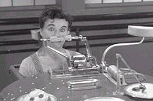

1936


Charly Chaplin dreht den Film "Modern Times". Angesiedelt zur Zeit der Wirtschaftkrise in den 30iger Jahren spiegelt der Film wider, was Millionen Menschen damals erlebten: Arbeitslosigkeit, Armut, Hunger. Ein Landstreicher, gespielt von Chaplin, führt einen verzweifelten Kampf gegen die entmenschlichenden Maschinen des Industriezeitalters. Als Fließbandarbeiter wird er buchstäblich von einer Maschine gefüttert, und wird später im Getriebe der Maschine, zwischen Zahnrädern und Stangen, selber zum "Futter"...